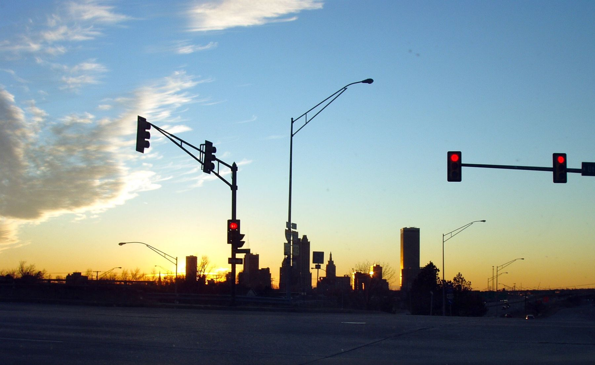
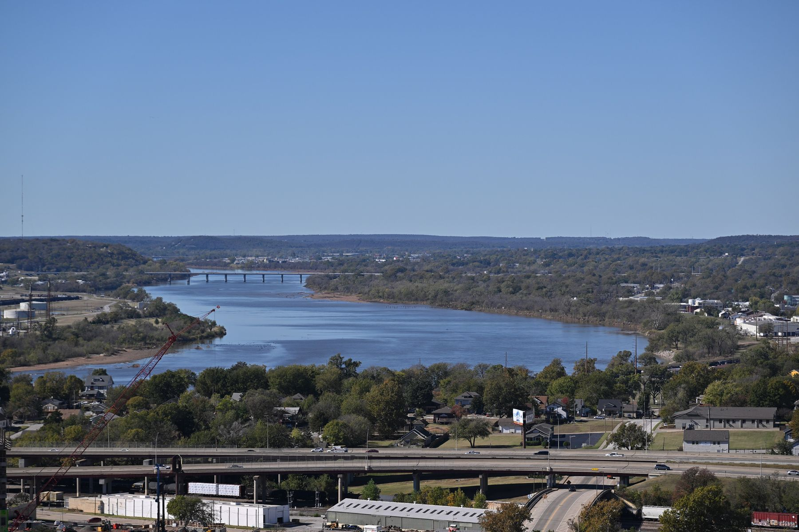
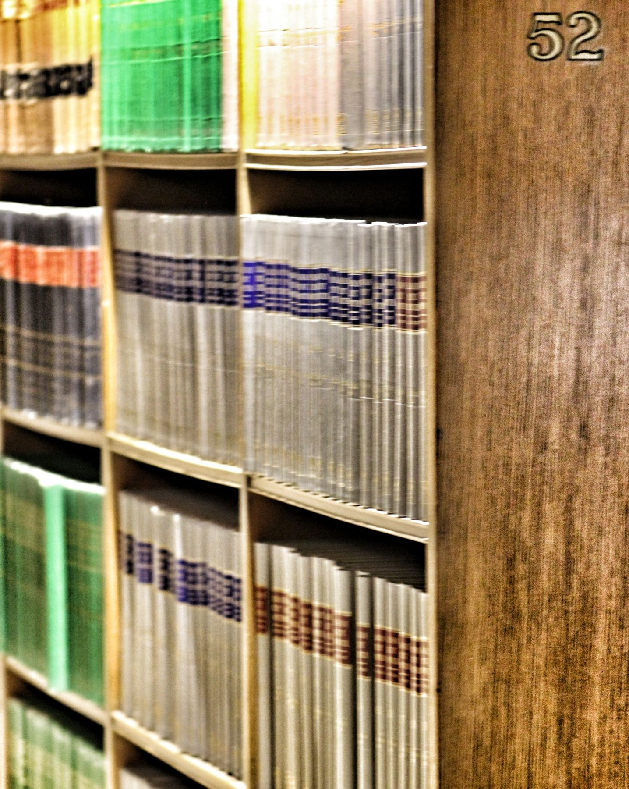
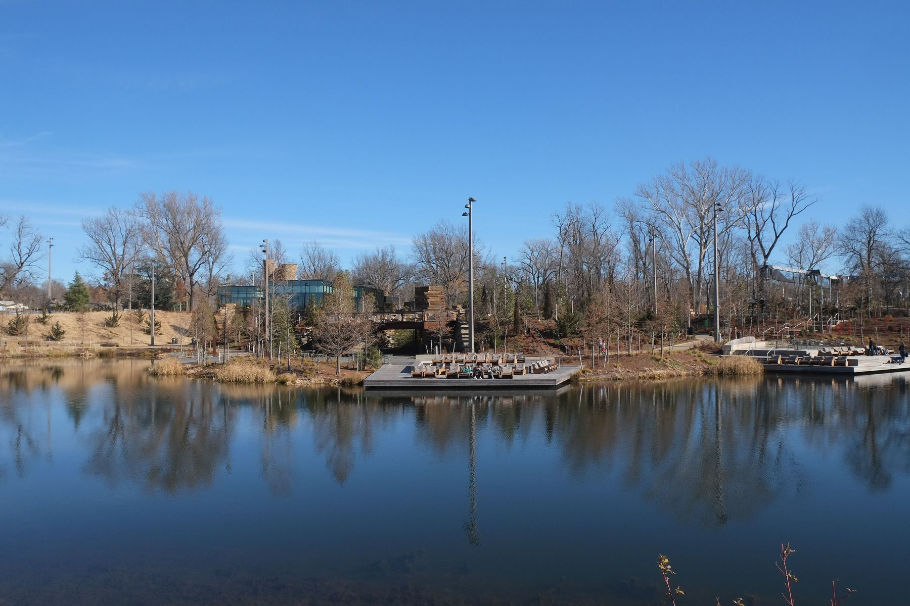

Image Credits
Every photograph is free-licensed and credited here. Images were resized and color-overlaid for design.
| Preview | Image (Wikimedia Commons) | Author | License |
|---|---|---|---|
 | Tulsa skyline sunset.jpg | Janice Waltzer | CC BY 2.0 |
 | Arkansas River from Tulsa OK 2024-11-09 13-19-21 1.jpg | G. Edward Johnson | CC BY 4.0 |
| Philtower-Building-Tulsa-Oklahoma.jpg | Jordan Michael Winn | CC0 | |
| Legal Gavel (27571702173).jpg | Blogtrepreneur | CC BY 2.0 | |
 | Canadian law books on shelf (31089552820).jpg | David Whelan | CC0 |
| Legal Contract & Signature - Warm Tones.jpg | Blogtrepreneur | CC BY 2.0 | |
| Family watching beach sunset (Unsplash).jpg | David Straight davidstraight | CC0 | |
 | Tulsa's Gathering Place.jpg | Paul Sableman | CC BY 2.0 |


.jpg){kind=link}
.jpg){kind=link}

.jpg){kind=link}

Changes: images were downscaled, recompressed, and displayed under navy color overlays or cropped. CC BY and CC BY 4.0 images are used with attribution as required; CC0 images require none but are credited anyway.
Original artwork
The Sampson monogram logo, the illustrated attorney portrait, team monogram avatars, icons, credential badges, and the office map illustration are original SVG artwork created for this project. The portrait is an illustration of a fictional character, not a photograph of a real person.